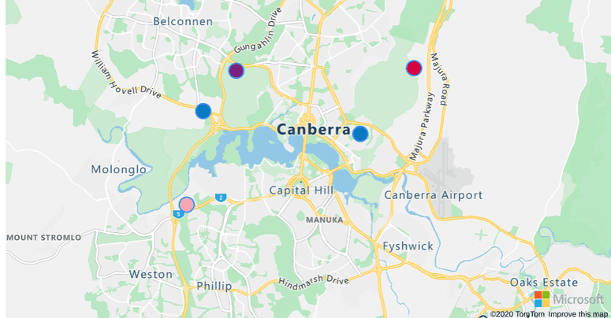

<!DOCTYPE html>
<html lang="en">
<head>
    <title>DadsTaxi - shows how busy you get when you are a parent or fur parent</title>

    <meta charset="utf-8" />
    <meta http-equiv="x-ua-compatible" content="IE=Edge" />
    <meta name="viewport" content="width=device-width, initial-scale=1, shrink-to-fit=no" />
    <meta name="description" content="Dads taxi shows how busy you get when you are a parent or fur parent and how to animate multiple points on the map." />
    <meta name="keywords" content="dadstaxi, Microsoft maps, map, gis, API, SDK, animation, animate, animations, point, symbol, pushpin, marker, pin" />
    <meta name="author" content="Stuart Eggerton" />


    <!-- Add references to the Azure Maps Map control JavaScript and CSS files. -->
    <link rel="stylesheet" href="https://atlas.microsoft.com/sdk/javascript/mapcontrol/2/atlas.min.css" type="text/css" />
    <link rel="stylesheet" href="/style.css" type="text/css" />
    <script src="https://atlas.microsoft.com/sdk/javascript/mapcontrol/2/atlas.min.js"></script>

    <!-- Add reference to the animation module. -->
    <script src="/azure-maps-animations.min.js"></script>

    <style>
        body {
          background-image: url('mock-small.png');
          background-repeat: no-repeat;
          background-attachment: fixed;
          background-size: cover;
        }
        </style>
</head>
<body>
    <div id="myMap" style="position:relative;width:100%;min-width:290px;height:600px;"></div>


    <div id="logo">
        
        <!-- <div style="position:absolute;top:10px;left:10px;background-color:white;padding:5px;"> -->
        <div id="buttons">
            <input type="button" value="Normal day" onclick="playAnimations('sequential');" />
            <input type="button" value="Chaotic day" onclick="playAnimations('together');" />
            <!-- <input type="button" value="Clashing!" onclick="playAnimations('interval');" /> -->
            <!-- <input type="button" value="(Stop)" onclick="stopAnimations();" /> -->
        </div>
        <p id="messages"></p>
        <!--  -->
    </div>

    <!-- <fieldset style="width:calc(100% - 30px);min-width:290px;margin-top:10px;">
        <legend><h1 style="font-size:16px">Animate multiple points</h1></legend>
        This sample shows how to animate multiple points on the map. 
        This sample uses the open source <a href="https://github.com/Azure-Samples/azure-maps-animations" target="_blank">Azure Maps Animation module</a>
    </fieldset> -->
</body>
</html>